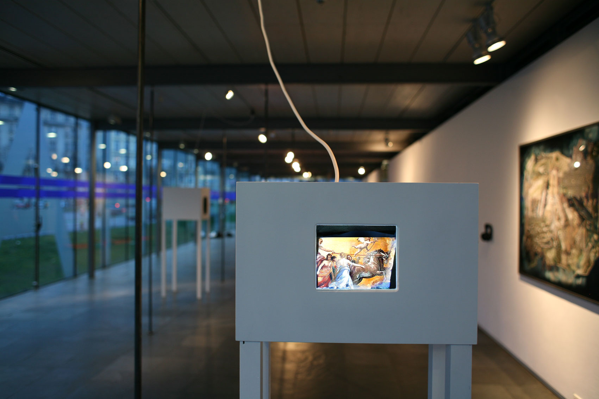

contact
Tine Tillmann
work
CV

I'M LOOKING AT THE RIVER BUT I'M THINKING OF THE SEA Installation im project space der Kunsthalle Wien 2006 TEXT >>>>
next >>>
INFOROBOT II * AURORA mechanisches Video rotierender Motor Duratrans Leuchtox